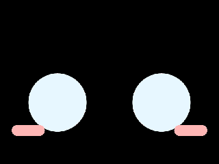
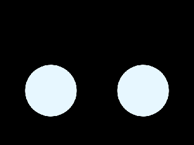
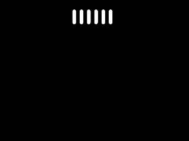

Emote 原始动画预览
乐鑫维护者发布的 Emote 资源包 · BOX-3 320 × 240 布局 · 原始帧按 20 fps 播放
这些是当前依赖中的原始 EAF 解码结果；浏览器为方便比较重复播放。预览省略电量、时钟和对白叠层，不是设备实录。
开心 42 帧 · 20 fps待机眼睛 88 帧 · 20 fps
眨眼 14 帧 · 20 fps
难过 96 帧 · 20 fps哭泣 43 帧 · 20 fps生气 50 帧 · 20 fps疑惑 77 帧 · 20 fps惊讶 34 帧 · 20 fps困倦 118 帧 · 20 fps
聆听指示 50 帧 · 20 fps